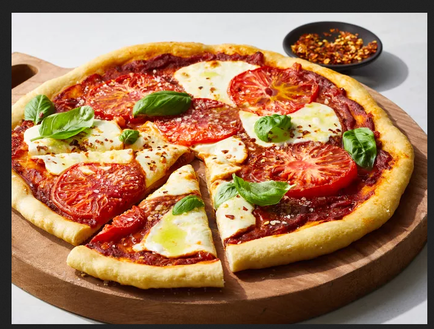

Home Made Pizza

How to Make the Mozambican Home-made pizza
Discover the joy of homemade pizza with our simple yet delicious recipe!
Crafted with love in your own kitchen,
our homemade pizza promises a tantalizing experience for your taste buds.
Start with a perfect dough, hand-kneaded to airy perfection,
then generously layer on your favorite sauce, toppings, and cheese.
You'll find a detailed ingredient list and step-by-step
instructions in the recipe below, but let's go over the basics:
Ingredients
Dough:
- 1 (.25 ounce) envelope active dry yeast
- 1 cup lukewarm water
- 3 cups all-purpose flour
- 2 tablespoons shortening
- ¼ teaspoon salt
Sauce:
- 1 tablespoon vegetable oil
- ½ cup chopped onion
- 1 (6 ounce) can tomato paste
- ¾ cup water
- 1 teaspoon salt
- ½ teaspoon white sugar
- ½ teaspoon dried oregano
- ¼ teaspoon garlic powder
- ¼ teaspoon dried basil
- ¼ teaspoon dried marjoram
- ¼ teaspoon ground cumin
- ¼ teaspoon chili powder
- ⅛ teaspoon crushed red pepper flakes
- ⅛ teaspoon ground black pepper
Cheese
- 1 (12 ounce) package shredded mozzarella cheese, or to taste
Directions
- Step 1: Gather all ingredients.
- Step 2:
Make the dough: Dissolve yeast in lukewarm water in a small bowl.
Let stand until creamy, about 10 minutes.
- Step 3:
Combine flour, shortening, and salt in a large bowl;
add yeast mixture and stir until dough comes together.
Knead dough on a lightly floured surface until smooth and elastic,
about 8 minutes.
- Step 4:
Lightly oil a large bowl. Place dough into the bowl and turn to coat with oil.
Cover with a damp cloth and let rise in a warm place until doubled in volume, about 45 minutes.
- Step 5:
Meanwhile, make the sauce: Heat oil in a small saucepan over medium heat.
Add onion and sauté until tender, about 5 minutes.
- Step 6:
Stir in tomato paste, water, salt, sugar, oregano, garlic powder,
basil, marjoram, cumin, chili powder,
red pepper flakes, and black pepper;
simmer for 15 to 20 minutes.
- Step 7:
Preheat the oven to 400 degrees F (200 degrees C).
- Step 8:
Divide dough in half. Roll each half into a 12-inch circle.
Place dough onto two 12-inch pizza pans; cover with sauce and mozzarella cheese.
- Step 9:
Bake in the preheated oven until crusts are golden brown, about 20 minutes.
Don't Forget to enjoy your pizza with some wine !!!